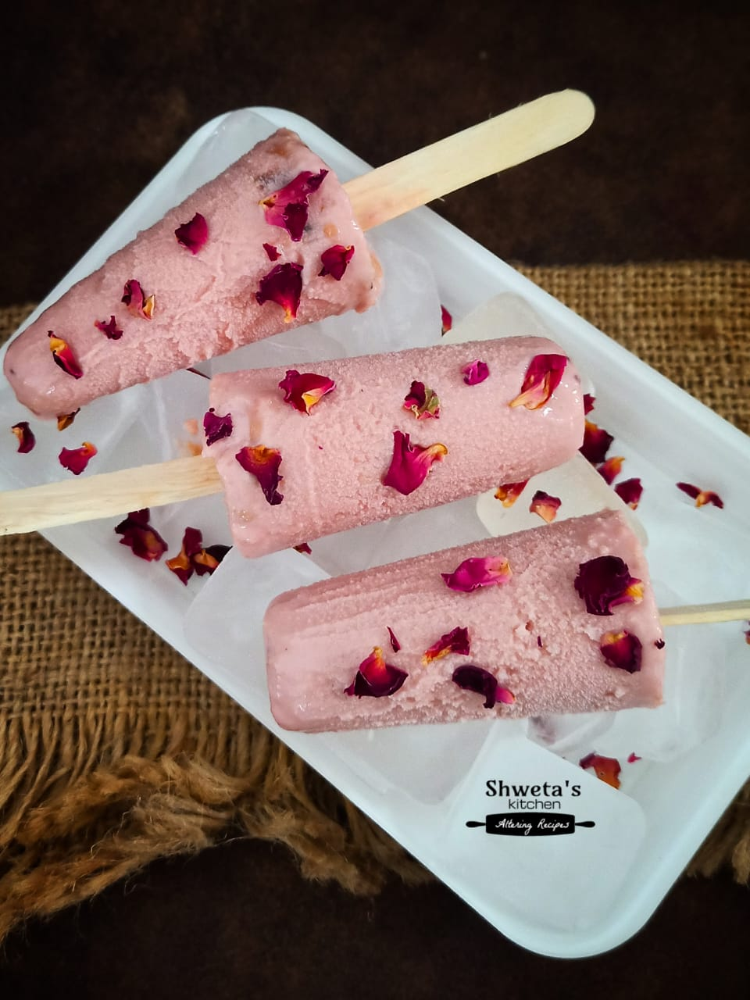

Pulao is another iconic rice dish in Pakistan, offering a more subtle and refined alternative to the spicy, aromatic biryani. While biryani is rich, bold, and packed with intense flavors, pulao focuses on a simpler, more delicate balance of spices, making it a versatile and comfort-filled dish
Biryani is a popular and beloved dish in Pakistan, known for its rich, aromatic flavors and vibrant colors. It is a spiced rice dish, often made with basmati rice, meat (typically chicken, mutton, or beef), and a variety of spices
Karahi (also spelled "Kadai" or "Karahi") is a popular Pakistani dish that is cooked in a wok-like pan, also called a karahi. The dish is known for its rich, flavorful taste and is often served with naan or rice

Rose Ice Cream (known as Gulab Ice Cream in Pakistan) is a traditional and refreshing dessert with a distinctive floral aroma and flavor. It combines the sweet, creamy texture of ice cream with the delicate essence of rose, making it a unique treat enjoyed in many parts of Pakista